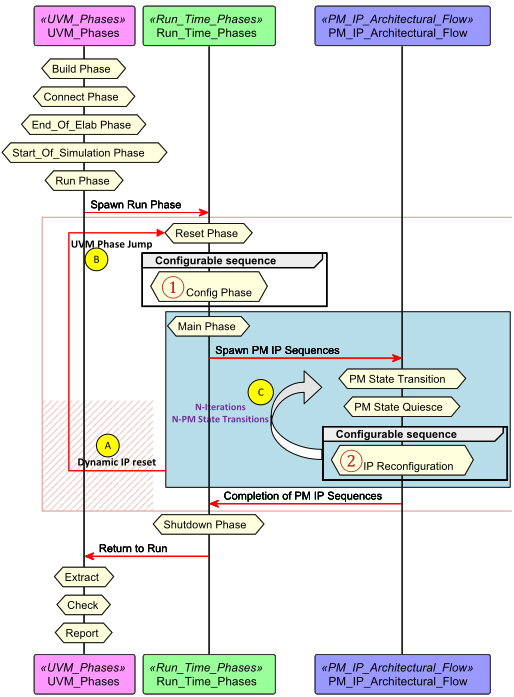
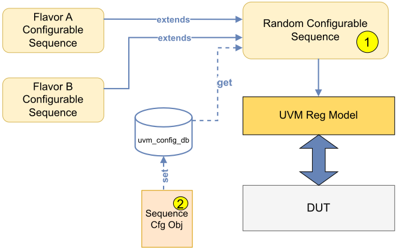
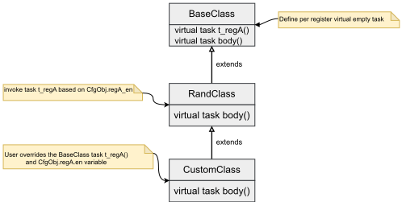

驯服配置复杂性：一种基于 UVM 的 IP 验证方法
论文针对高度可配置 IP 的验证复杂性问题：传统静态配置加寄存器随机化只能为单一配置初始化 DUT，无法在仿真运行时动态重配置，且初始启动与运行时重配置通常需维护两套 sequence，造成代码重复与维护开销。方法上，作者基于原生 UVM 提出统一随机可配置 sequence 模式：以 Base/Rand/Custom 三层层次化 sequence 抽象组织寄存器编程任务，用脚本从寄存器流程输出自动生成的 sequence configuration object 集中控制各寄存器的使能与随机化，并通过 UVM factory type override 在不修改 testbench 代码的前提下派生受限场景变体。同一 sequence 被复用于初始 reset、warm reset 与 runtime 重配置窗口，并配合 UVM Jump Phase 处理异步 reset 注入后的非顺序相位跳转。该方案已在 Intel server CPU Power Management IP 上部署，新配置变体实现速度提升 2x，reset 与 runtime 阶段 sequence 复用率达 100%。
高度可配置 IP 架构引入大量配置寄存器、工作模式与动态状态转换，传统验证方法（静态配置初始化 + 寄存器随机化）只能为单一配置设置 DUT，无法在运行时动态重配置 IP，也缺乏针对特定场景的定制能力；标准 UVM 寄存器 sequence 通常仅在仿真开始时随机化一次，验证团队被迫为初始启动与运行时重配置维护独立 sequence，导致代码重复和维护开销。
基于原生 UVM 的统一随机可配置 sequence 方法：1) 层次化 sequence 架构——Base 层定义每个寄存器/重配置流程的虚拟任务（可留空或含默认随机化），Rand 层依据配置变量调用相应任务，Custom 层通过 override 定制具体场景；2) sequence configuration object（seq_object）集中管理每个寄存器的使能/随机化控制变量与 soft 约束，并由脚本解析寄存器流程输出自动生成；3) 利用 UVM factory type override（如 +uvm_set_type_override=RandClass,CustomClass）在不修改 testbench 代码的情况下派生受限场景变体；4) 在 UVM Run Phase 的 Main Phase 内通过 PM State Quiesce sequence 等待 IP 进入 quiescent 状态后复用同一可配置 sequence 完成多次动态重配置；5) 通过 UVM Jump Phase 实现异步 reset 的非顺序相位跳转，reset 后仍复用同一层次化 sequence 完成重配置，保证 reset 与 runtime 场景寄存器编程方式一致。
实现新配置变体的速度提升 2x（2x faster）
reset 与 runtime 阶段之间实现 100% sequence 复用
方法已部署于 server CPU Power Management IP，初始配置与运行时重配置共用单一层次化 sequence 和 UVM configuration object
相对已有工作：标准 UVM 寄存器 sequence 通常仅在仿真开始时随机化一次（静态配置）；业界常用 virtual sequence 搭配 configuration object 管理 testbench 拓扑的构建期/运行期配置，而非驱动可跨阶段复用的动态寄存器编程 sequence；UVM factory override 虽被广泛用于替换 sequence，但很少用于从单一统一配置 sequence 派生受限的'flavors'；phase jumping 虽在 SoC bring-up 论文中用于处理 reset，但将其与统一层次化 sequence 模式集成以实现无缝重配置在已有工作中仍是空白。
相关度级别：high
命中能力域：2.4 设计验证方法学 | 2.7 EDA/验证自动化与 AI 辅助
理由：论文核心是 UVM testbench 中面向高度可配置 IP 的 sequence 方法学，直接命中 2.4 设计验证方法学的核心技术（UVM/SystemVerilog 验证平台、sequence 设计模式、factory override、register model 编程、动态状态转换验证）；sequence configuration object 由脚本从寄存器流程输出自动生成、并规划从寄存器 spec 自动生成 sequence 与 AI 场景选择，与 2.7 的脚本/框架自动化和可复用验证资产相关。团队交付的 LPDDR5X/LPDDR6、HBM4、UCIe 等 IP 同样是寄存器密集、模式众多且需 runtime 重配置（如 mode register 编程、训练参数更新、链路重配置）的产品线，该统一可配置 sequence 模式可直接迁移。
建议动作：深入精读并做内部分享
驯服配置复杂性：一种基于通用验证方法学（UVM）的 IP 验证方法
Bhaskar Vedula，英特尔公司（Intel Corporation），美国俄勒冈州波特兰，bhaskar.vedula@intel.com
Stephen P. Haake，英特尔公司，美国明尼苏达州圣保罗，stephen.p.haake@intel.com
Chandrakanth N. Betageri，英特尔公司，美国加利福尼亚州圣克拉拉，chandrakanth.n.betageri@intel.com
Ganesh Sharma，英特尔公司，美国科罗拉多州柯林斯堡，ganesh.sharma@intel.com
IP 架构中日益增强的可配置性给验证工程师带来了重大挑战。本文提出了一种模块化且可扩展的测试平台方法学，该方法学建立在原生 UVM（通用验证方法学）原则之上，利用统一的随机可配置序列模式、层次化序列抽象以及工厂覆盖（factory override）机制。该方法应用于服务器 CPU 电源管理 IP，减少了开发工作量、增强了复用性并提升了覆盖率，同时支持动态状态转换。该方法学广泛适用于需要大量寄存器配置与重配置能力的复杂设计。
UVM；寄存器编程，IP 验证；测试平台基础设施；序列设计模式，电源管理 IP。
高度可配置的 IP 架构构成了现代片上系统（SOC）的骨干，实现了复用与灵活性。在复位时和运行时动态修改 IP 行为的能力，已成为实现性能与功耗目标的关键。然而，这种可配置性在管理大量配置寄存器、模式以及动态状态转换方面带来了新的验证挑战。
传统方法（如静态配置初始化结合寄存器随机化）侧重于将待测设备（DUT）设置为单一配置。这些技术无法在运行时对 IP 进行动态重配置，也缺乏针对特定场景的定制能力。
本文提出一种可配置序列模式，并结合层次化序列设计技术对 DUT 寄存器进行编程。所提出的方法能够在初始复位、热复位和运行时窗口中复用单一配置序列。同时，本文还展示了如何利用通用验证方法学（UVM）原生的 factory override 技术生成高度随机化基础序列的受约束派生序列，而无需修改原始序列。该方法显著减少了测试平台的开发工作量，增强了可配置性，并提升了复杂 IP 的验证效率。
传统的验证方法通常依赖静态配置序列和基本的寄存器随机化。这些方法虽然足以满足 IP 的初始调试（bring-up）需求，但在动态运行时重配置场景中却存在不足。标准的 UVM 寄存器序列通常仅在仿真开始时对寄存器模型进行一次随机化（静态配置）。这限制了验证动态状态转换的能力——在这类场景中，IP 必须在不重启仿真的情况下即时完成重新配置。
业界常见做法是使用虚拟序列（virtual sequence）配合配置对象来管理测试平台设置。然而，这些方法通常是为测试平台拓扑的静态构建期或运行期配置而设计的，而非用于驱动可跨不同阶段复用的动态寄存器编程序列。因此，验证团队往往需要为初始启动和运行时重配置分别维护独立的序列，从而导致代码重复和维护开销。
尽管 UVM factory override 已被广泛用于替换序列，但很少被用于创建单一统一配置序列的受约束“变体”（flavor），使其能够同时适应复位与运行时上下文。此外，虽然片上系统（SoC）调试相关论文中已探索过利用 phase jumping（阶段跳转）来处理复位，但将其与统一的层次化序列模式相结合以实现无缝重配置，在现有技术中仍是一个空白。
当前方法面临的主要挑战包括：
为解决上述局限，需要一种验证方法学，它能够统一配置处理、通过 phase jumping 支持动态重配置，并利用层次化 factory override 来最大化复用性与灵活性。
在复杂的 IP 架构中，动态修改配置与功能的需求日益增长。在电源管理（PM）IP 中，我们引入了一种新的配置方法学，使 IP 的配置与功能能够根据工作负载和架构需求进行适配。我们的电源管理 IP 负责控制 SoC 上其他各类 IP 的电源状态转换，因此具有独特的配置考量。为限制验证排列组合的数量，某些配置寄存器可以在任意时刻修改，另一些只能在电源管理流程暂停时修改，还有一些则需要硬件复位。图 1 给出了电源管理（PM）IP 随时间变化的动态配置概览。
为实现图 1 所示的架构流程，我们利用标准的通用验证方法学（UVM）phase，并特别关注 Run Phase——它是唯一一个组件在其中并发执行、且可在有序关闭（orderly shutdown）过程中加以协调的 UVM phase [1] [2]。我们的 PM IP 验证框架扩展了一种支持自定义 UVM phase 的集中式验证架构，从而能够集成特定序列以构成 PM 架构流程。
两种不同的运行模式定义了将 UVM phase 与电源管理 IP 验证相集成的框架：
动态重配置模式发生在 UVM Run Phase 的 Main Phase 中，此时电源管理 IP（Power Management IP）已退出复位。如图 2 所示，初始配置通过可配置序列（configurable sequence）获得（图 2 中的标记 1 ⃝）。初始配置完成后，电源管理算法和状态转换由 UVM 序列（PM State Transitions）发起，以测试期望的场景。随后，所有所需的电源管理激励均已施加完毕，此时需要重新配置电源管理 IP。这要求电源管理算法暂停，并通过 PM State Quiesce UVM 序列使任何正在进行的电源状态转换得以完成。随后，电源管理 IP 被重新配置，复用同一个可配置序列（图 2 中的标记 2 ⃝）。该动态重配置过程在单个 UVM Main Phase 内执行多次迭代，每次迭代代表不同的架构运行模式，如图 2 中的标记 C 所示。
在该模式下，电源管理 IP 的运行方式与动态重配置模式类似，但增加了异步复位处理能力。在电源管理操作进行期间，系统在管理其他 IP 的同时可能会收到意外的复位请求。为应对这种情况，通过注入异步复位请求来触发受控的复位行为，且不会干扰整体验证流程。
该行为通过图 2 中标记 A ⃝ 所示的高级 UVM Jump Phase 技术实现，该技术支持非顺序的阶段跳转，从而能够优雅地处理这些异步情况。所提出的方法采用相同的可配置序列框架，在不同架构状态下对 IP 进行重配置，确保正常重配置场景与复位驱动的重配置场景之间的一致性。

为实现上述行为，清单 1 给出了 IP UVM 测试类，该类负责搭建环境，并将各序列连接到相应的 UVM phase。该可配置序列在初始配置和重配置时均会被调用，展示了其在不同运行场景下的通用性与可复用性。
class ip_uvm_test extends uvm_test ; function connect_phase (uvm_phase phase); super. connect_phase (phase); env.set_test_phase_type( 'RESET_PHASE', 'reset_sequence'); env.set_test_phase_type( 'CONFIG_PHASE', 'ipCfgSeq'); //Configurable Sequence env.set_test_phase_type( 'MAIN_PHASE', 'user_func_seq'); endfunction ...... endclass : ip_uvm_test
测试平台中使用统一的 IP 可配置序列来管理初始 IP 配置设置以及达到静止状态后的动态 IP 重配置。无需为初始启动和运行时操作分别创建序列，而是通过图 3 中标记为 2 ⃝ 的序列配置对象，对图 3 中标记为 1 ⃝ 的单个默认随机可配置序列进行配置，从而同时支持这两种用例。

序列配置对象定义了随机配置变量，这些变量控制随机化，并基于架构配置生成寄存器访问。该方法通过以层次化模式开发序列来建立抽象层次，该序列由下文所述的多个层次组成。
前文介绍的统一随机 IP 可配置序列是适应多样化架构配置和管理复杂数据流行为的基础。为确保可扩展性和模块化，该序列在保持开发与集成简便性的同时采用了约束随机测试。序列对象用于对重配置流程中的各种元素进行随机化，从而在需要时提供细粒度控制和针对性定制。通过将该序列与配置对象配对，该方法有效地实现了层次化序列架构，如图 4 所示，提供了灵活高效的

机制，用于在不同操作场景下对重配置寄存器进行编程。
所提出的方法引入了一种分层抽象模型，该模型从基础序列层开始，基础序列层定义了 IP DUT 的基本编程与功能构造。层次结构中的更高层在此基础之上构建，以实现扩展功能和特定场景行为。每一后续层均被设计用于处理日益复杂和定制的验证场景。这种结构化层次能够高效地管理架构复杂性，支持受控随机化，并增强可配置性，同时为验证工程师提供对验证意图和激励生成的细粒度控制。
与统一可配置序列配合使用的序列配置对象 seq_object 充当中央容器，用于存放驱动 IP 配置所需的全部控制变量与默认约束。设计中的每个寄存器或流程均映射到该对象内的一个对应变量，从而实现精确控制与可追溯性。为简化序列开发，该对象通过一个对寄存器流程输出进行解析的脚本自动生成，最大限度地减少了人工工作量与潜在的不一致性。对象创建完成后，遵循标准 UVM 惯例，在序列中通过环境配置对其进行访问。如代码清单 2 中的代码片段所示，seq_object 类定义使验证工程师能够轻松定义逐寄存器配置、调整约束，并动态定制行为，以满足特定的特性覆盖率目标。
class seq_object extends uvm_object ; // 全局控制
rand bit none; // 为 1 时，完全跳过配置
rand bit reconfigure_all; // 为 1 时，强制所有合法寄存器重新配置
// 逐寄存器使能与随机化控制
rand bit regA_en, regA_rand_en;
rand bit error_severity_control_en, error_severity_control_rand_en ;
rand bit idle_power_managment_policy_en, idle_power_managment_policy_rand_en ;
// 跳过属于我们不希望触及的功能流程的寄存器
// rand bit dvfs_control_en, dvfs_control_rand_en ;
// 跳过无法配置的只读寄存器
// rand bit current_device_state_en, current_device_state_rand_en ;
`uvm_object_utils_begin( seq_object )
`uvm_field_int(regA_en, UVM_DEFAULT)
`uvm_field_int(regA_rand_en, UVM_DEFAULT)
`uvm_field_int(error_severity_control_en, UVM_DEFAULT)
...
`uvm_object_utils_end
// 默认约束
constraint c_reg_en {
soft regA_en == 0;
soft regA_rand_en == 1;
// 只能在复位时配置，复位序列会将使能覆盖为 1
soft error_severity_control_en == 0;
soft error_severity_control_rand_en == 0;
// 可在复位时以及 PM（电源管理）流程暂停期间配置，默认重新配置
soft idle_power_managment_policy_en == 0;
soft idle_power_managment_policy_rand_en == 1;
...
}
...
...
endclass : seq_object
一旦序列配置对象填充完毕，我们需要在环境配置对象中定义该序列配置对象的句柄，以便所有序列和组件都能访问序列配置的方法和变量。清单 3 给出了环境配置对象的一个示例。
class env_cfg extends uvm_object ; seq_object cfgSeq; ...... endclass : env_cfg
基类的设计目的是访问测试平台的关键资源，例如寄存器模型和配置对象，其实现方式是从测试平台的 config_db 中检索这些资源。此外，基类为每个设计寄存器或重配置流程定义了相应的虚拟任务。这些虚拟任务既可以留空，也可以填充默认的随机化内容，从而允许用户根据需要对其进行覆盖。
如清单 4 所示，基类演示了在序列的 body 中通过典型的 uvm_config_db::get() 操作来访问环境配置。下面的示例突出了封装必要虚拟任务的模块化序列构建方式：其中 t_regA() 任务留空以供用户覆盖，而 t_regARand() 任务则为基线 IP 配置实现默认的寄存器随机化。
class BaseClass extends uvm_sequence ; `uvm_object_utils( BaseClass ) virtual task body (); if (!uvm_config_db #(env_config)::get(null, '*sqr', 'cfg', cfg)) begin `uvm_fatal(get_name(), `Did not get the config handle`); end // empty shell endtask: body ... virtual task t_regA (); //This is an empty virtual task. endtask: t_regA ... virtual task t_regARand (); cfg.regblock.regA.randomize(); cfg.regblock.regA.update(); `uvm_info(get_name(), `regA is randomized`, UVM_LOW); endtask: t_regARand virtual task t_error_severity_control (); //This is an empty virtual task by default. User overrides in the custom layer endtask: t_error_severity_control virtual task t_error_severity_controlRand (); cfg.regblock.error_severity_control.randomize(); cfg.regblock.error_severity_control.update(); `uvm_info(get_name(), `error_severity_control is randomized`, UVM_LOW); endtask: t_error_severity_controlRand .... endclass: BaseClass
如清单 6 所示，用户可以通过 CustomClass 类应用覆盖（override）技术来生成自定义场景，该类为激励生成创建了一个抽象层。用户可以完全自定义配置值，并针对特定的验证场景覆盖基类方法。
用户需要对 idle_power_management_policy 寄存器域拥有完全的控制权，而非进行完全随机化。为实现这一点，必须设置相关的序列配置对象变量：将 cfgSeq.idle_power_management_policy_en 设为 1，将 cfgSeq.idle_power_management_policy_rand_en 设为 0。通过恰当地配置这些变量，相应的基类 task 便在该抽象层被覆盖，随后定制的 task 会在 RandClass 层中被调用。
class CustomClass extends RandClass ; `uvm_object_utils( CustomClass ) virtual task body (); // disable BaseClass randomization and test a specific policy configuration cfg.cfgSeq.idle_power_managment_policy_en = 1; cfg.cfgSeq.idle_power_managment_policy_rand_en = 0; ... super. body (); endtask: body ... // override BaseClass with the desired fixed values task t_idle_power_managment_policy(); cfg.regblock.idle_power_managment_policy.fieldX.set(0); cfg.regblock.idle_power_managment_policy.fieldY.set(1); cfg.regblock.idle_power_managment_policy.update(); endtask ... endclass: CustomClass
在清单 7 中，用户通过对相关配置变量进行编程，创建了一个用于复位场景的自定义序列。在此示例中，错误严重级别（error severity）只能在复位条件下被修改。一旦创建了该自定义序列，它便为特定于复位的验证场景提供了必要的框架。
class CustomResetClass extends RandClass ; `uvm_object_utils(CustomResetClass) virtual task body (); // enable programming of registers that shall not be reconfigured after reset cfg.cfgSeq.error_severity_control_en = 1; ... endtask: body task t_error_severity_control () cfg.regblock.error_severity_control.x_is_fatal.set(1); cfg.regblock.error_severity_control.y_is_fatal.set(1);// non-default value cfg.regblock.error_severity_control.update(); `uvm_info(get_name(), `error_severity_control runtime reset programming`, UVM_LOW); endtask endclass: CustomResetClass
该测试设置演示了层次化序列模式如何与 UVM 测试基础设施集成。清单 8 中所示的 ipCfgSeq 封装序列在测试环境与可配置序列层次之间提供了简洁的接口，而测试类则建立了适当的阶段到序列映射，以实现协调执行。
对于自定义场景，ipCfgSeq 序列默认实例化 RandClass，但用户可以通过 UVM 类型重写（type override）将其替换为 CustomClass，以启用专门的行为。
class ipCfgSeq extends uvm_sequence ; rand RandClass ip_RandClass; function new(string name = "ipCfgSeq"); super.new(name); endfunction virtual task body (); `uvm_do(ip_RandClass) endtask: body endclass
例如，要在命令行中将 RandClass 重写为 CustomClass，可使用：
+uvm_set_type_override=RandClass,CustomClass
这确保了在仿真期间 RandClass 的所有实例都会被 CustomClass 替换，从而无需修改测试平台代码即可实现自定义配置和行为。
在图 1 所示的 IP 重配置序列中，一旦被测设计（DUT）进入静默状态，便使用 RandClass 或 CustomClass 对目标寄存器进行重新编程，使 IP 转换到新的架构状态，从而改变其功能。为此，编写了一个新的序列 Listing 9，该序列引用了 IP Config Wrapper Sequence（参见 Listing 8）。由于执行发生在单个 Main Phase 内，该序列可以先等待 IP 达到静默状态，重新配置所需的寄存器，然后再恢复执行。示例 Listing 10 展示了在 main phase 中运行的序列。
class ip_reconfig extends uvm_sequence ; ipCfgSeq ipCfgSeq_h; //IP Config Wrapper Sequence --> Same Configurable Sequence `uvm_object_utils(ip_reconfig) virtual task body (); super. body (); // Polling on IP quiesce state wait(cfg.quiesce_state_attained); //During the reconfiguration flow, we disable the randomization of register regA. cfg.cfgSeq.regA_rand_en = 'h0; `uvm_do(ipCfgSeq_h) //Essentially this calls the RandClass, maintains all variables // Additional reconfiguration logic can be added here .. endtask: body endclass: ip_reconfig
class user_func_seq extends base_sequence; `uvm_object_utils(user_func_seq) ip_reconfig ip_reconfig_h; ... virtual task body (); super. body (); `uvm_do(pm_flow_seq1) //PM State Transistion `uvm_do(pm_flow_seq2) //PM State Transistion `uvm_do(ip_reconfig_h) // Quiesce and reconfigure `uvm_do(pm_flow_seq3) //Resume PM State Transistion endtask: body endclass: user_func_seq
这种方法能够生成不同的架构场景序列，并支持在重配置流程中进行动态类型重载，从而便于根据需要创建各种序列变体。
通过在初始配置和重配置中使用同一个可配置序列，该方法确保了一致性、简化了维护工作，并保持了架构的完整性。
动态复位条件代表了一种关键的验证场景，即异步复位事件发生在电源管理（PM）操作进行期间。与动态重配置模式中受控的重配置不同，复位条件可能在任何时刻被意外触发，因此需要健壮的处理机制来维持验证完整性。
在真实的片上系统（SOC）环境中，复位事件可能来源于多种渠道，包括系统级复位控制器、热管理单元或错误恢复机制。无论当前 PM IP 处于何种状态——是正在主动管理电源状态转换、处理配置变更，还是与依赖的 IP 模块进行协调——这些事件都必须得到妥善处理。
统一可配置序列方法通过以下几个关键机制为复位条件的处理提供了有效支持：
复位激励通过专用的复位代理（reset agent）在验证场景执行期间被异步注入。这些代理会监控验证环境，并能够基于预定义条件、随机间隔或特定测试场景触发复位事件。复位注入机制独立于主验证流程运行，从而确保正常操作与复位事件之间具有符合真实情况的时间关系。
当检测到复位条件时，验证环境采用 UVM Jump Phase 技术来执行非顺序的相位跳转。这使得 testbench 能够从任意 Main Phase 序列（例如 PM State Transitions、Quiesce）直接跳转到 Reset Phase，而不会破坏整体验证架构。
在复位断言与解除之后，IP 必须重新配置才能恢复正常操作。该方法学利用了与正常重新配置场景中相同的分层可配置序列模式。这确保了寄存器编程方式的一致性，即使在复位恢复场景中也能保持统一序列架构的优势。
自定义复位初始化序列（例如代码清单 7 中的序列）可以在任意一次 Reset Phase 迭代中复用，也可以为每次 Reset Phase 迭代创建该序列的不同版本。这种方法能够对所有支持的架构配置进行全面的复位鲁棒性测试。
统一随机可配置序列被部署于服务器 CPU 电源管理 IP 中，仅通过单一的分层序列和 UVM 配置对象即可实现初始设置与运行时重新配置。该方法支持通过继承和 UVM 重载（override）快速创建新的序列变体，从而减少代码修改并提升复用性。该方法学同样适用于其他需要灵活寄存器配置的复杂设计。表 I 总结了主要优势。
| Aspect | Traditional (No Unified Sequence) | Unified Configurable Sequence |
|---|---|---|
| Time to implement new configuration variant | ∼ 2x: manual sequence creation | ∼ 1x: derive new sequence class and override via UVM set_type |
| Effort to add new register | Manual sequence and object updates | Semi-automated: populate config object and base methods from register description |
| Sequence reuse across reset and runtime | Separate sequences required | Single sequence reused for both reset and runtime reconfiguration |
| Support for distinct reset vs runtime randomiza- tion | Not supported | Supported: independent randomization for reset and runtime |
| Architectural flavor creation | Not supported | Supported: config object enables architectural variants |
| Configuration customization in tests | Manual per-test coding | All tests leverage unified config object with ran- domization/customization |
| Aspect | Traditional (No Unified Sequence) | Unified Configurable Sequence |
统一可配置序列方法学广泛适用于任何需要频繁配置与重新配置的 IP。其分层模式可实现：
本文提出了一种基于 UVM 的全面验证方法学，通过统一可配置序列模式成功应对了高度可配置 IP 架构日益增长的复杂性。该方法在保持代码可复用性的同时实现了动态重新配置能力，并减少了开发工作量。
本工作的主要贡献包括：
统一序列架构：一种分层序列模式（Base、Random、Custom 层）可针对多种配置实现可扩展、模块化且可复用的寄存器编程。
动态验证：通过协同的 UVM phase 机制与 Jump Phase 技术，同时支持运行时重新配置和异步复位场景。
生产力提升：实现新的配置变体的速度提升 2 倍，同时在复位阶段与运行时阶段之间实现 100% 的序列复用。
广泛适用性：适用于任何需要灵活寄存器编程和重新配置的可配置 IP。
该方法学通过分层统一 UVM 序列模式实现动态重新配置、高效的激励生成和全面的覆盖率收集，从而简化了可配置 IP 的验证。它在支持复杂状态转换和运行时场景的同时，减少了开发工作量和代码重复。未来工作包括从寄存器规格说明自动生成序列，以及应用 AI 进行场景选择和覆盖率优化，进一步提升可扩展性和适用性。